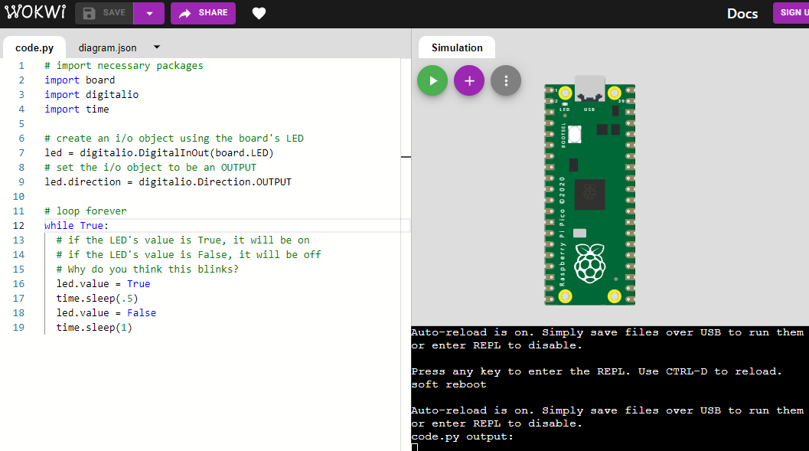

## CircuitPython Simulation and the Raspberry Pi Pico --- For today, we'll be using the [CircuitPython Simulator](https://wokwi.com/arduino/new?template=circuitpython-pi-pico) to get started --- ### Hello World This is a simple program to blink an LED. We'll go through it together. ```python # import necessary packages import board import digitalio import time # create an i/o object using the board's LED led = digitalio.DigitalInOut(board.LED) # set the i/o object to be an OUTPUT led.direction = digitalio.Direction.OUTPUT # loop forever while True: # if the LED's value is True, it will be on # if the LED's value is False, it will be off # Why do you think this blinks? led.value = True time.sleep(.5) led.value = False time.sleep(1) ``` --- ### Imports ```python import board import digitalio import time ``` You'll use these three modules almost all the time. These will let you access the different parts of the board, create and use inputs and outputs, and work with time --- ### REPL We're going to take a look at the parts of the board, and with it, the REPL (Read-Evaluate-Print Loop). It's the black terminal window in the bottom right  --- ### REPL To access the REPL, click in the black terminal window and use <kbd>ctrl</kbd> + <kbd>c</kbd> to stop the code and <kbd>ctrl</kbd> + <kbd>d</kbd> to reboot. Then press any key to enter the REPL. You should see something like this: ``` Adafruit CircuitPython 7.0.0-rc.1-81-g8520c430a on 2021-09-14; Raspberry Pi Pico with rp2040 >>> >>> ``` From here, you can use your board interactively! --- ### REPL The REPL will accept a line of code from you and evaluate it *immediately*. After evaluating the code, it will you the value of whatever it just evaluated. Try typing things in and pressing enter. Can you do math in here? --- ### REPL Let's look at the `dir()` function. When it's used, you'll need an *argument* - whatever you want to list the contents of. It wlil return the contents of that object. 1. Import the board module. It will stay imported until you reset the board you're using `import board` 2. Use `dir()` as shown below. What do you get? `dir(board)` --- ### REPL/dir() ``` >>> dir(board) ['__class__', '__name__', 'A0', 'A1', 'A2', 'A3', 'GP0', 'GP1', 'GP10', 'GP11', 'GP12', 'GP13', 'GP14', 'GP15', 'GP16', 'GP17', 'GP18', 'GP19', 'GP2', 'GP20', 'GP21', 'GP22', 'GP23', 'GP24', 'GP25', 'GP26', 'GP26_A0', 'GP27', 'GP27_A1', 'GP28', 'GP28_A2', 'GP3', 'GP4', 'GP5', 'GP6', 'GP7', 'GP8', 'GP9', 'LED', 'SMPS_MODE', 'VBUS_SENSE', 'VOLTAGE_MONITOR', 'board_id'] >>> ``` Can you find something in there about an LED? --- ### Setting up a digital IO pin Digital IO: Digital input and output. This is a pin that we can send a signal to or get a signal from. If we want to turn the built in LED on and off, we need to be able to make it an *output* and control the value. ```python # create an i/o object using the board's LED led = digitalio.DigitalInOut(board.LED) # set the i/o object to be an OUTPUT led.direction = digitalio.Direction.OUTPUT ``` --- ```python # create an i/o object using the board's LED led = digitalio.DigitalInOut(board.LED) # set the i/o object to be an OUTPUT led.direction = digitalio.Direction.OUTPUT ``` Any LED or other digital output will generally follow this template. You'll change the name of the variable (`led` here) and you'll change the pin (`board.LED`) here, but pretty much everything else will be the same. --- ### Controlling the LED ```python while True: led.value = True time.sleep(.5) led.value = False time.sleep(1) ``` `led.value` is a property of that `led` variable we created before. as you learn more, I'll explain how that happens. It's a boolean value. What are the possible values? Howdoes that control the LED? --- ### Try It Create your own blink pattern!